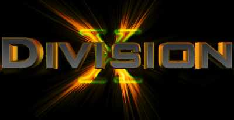

Can we say owned? I think we can. This page is now owned by Division X
and in an effort to keep lameness down on the internet we have came upon
this server. Now, the administrator of this server decided it would be a
good idea to leave some very exploitable daemons running on his machine.
I personally did not think this was a good idea. And so we show'd him the
reasons it wasn't. I am not sure who this guy is (probably a member of
global hell or tcp heh heh..) but he definately needs to learn a few
things about security. Oh and by the way kiddie when you get old enough
to start shaving, and get wise enough to know not to piss on an electric
fence, come talk to us we may be interested in you, after all you have
money enough to buy elite domains like ericcartman.org and browserstud.com
doesn't that make you cool?
Should I say right now that the reason we did this was because we hate fat
people? Or should that be later. Anyhow I am done and out bye bye :)
Dallion
Division X
Greets to: Legions of the Underground - Light - PLM - keebler
SCHMACK in da face to: gH - b4b0 - H4G1S (and all you other script
kidz)